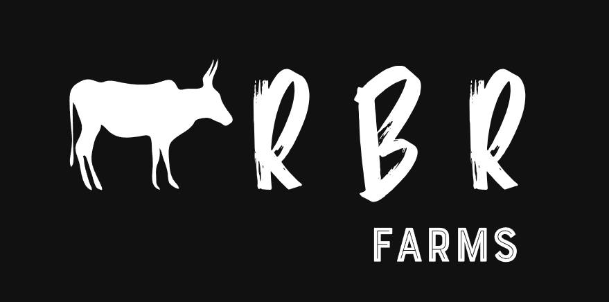

Why Choose Us?
RBR Farms is committed to preserving Tamil Nadu's native poultry breeds while ensuring high-quality, organic products. Our roosters and hens are raised in a natural, stress-free environment, contributing to their superior health and nutritional value.
By choosing our farm, you support ethical poultry farming and the conservation of indigenous breeds. Whether you're looking for naturally raised eggs, organic poultry meat, or wish to learn more about sustainable farming, RBR Farms is your trusted source for quality and authenticity.